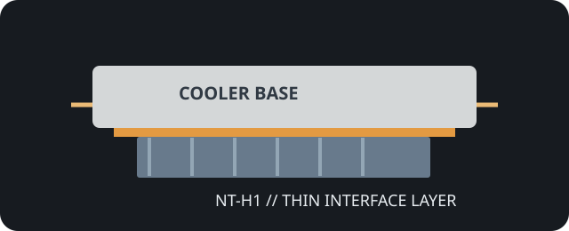

[ INDIVIDUAL COMPONENT // COOLING ]
Noctua NT-H1 3.5 g
3.5 g package of NT-H1 thermal compound; Noctua identifies it as non-electrically-conductive and non-corrosive.

IDENTIFICATION: NT-H1 package variants include other weights and bundled editions. This record describes the 3.5 g compound package only, not an installation accessory bundle.
Manufacturer specifications
| Catalog subcategory | Thermal Accessories |
|---|---|
| Exact model | Noctua NT-H1, 3.5 g |
| Material | Thermal compound; Noctua does not disclose a complete formulation in the referenced product documentation. |
| Package / dimensions | 3.5 g net content; product dimensions are not specified by the manufacturer. |
| Thermal conductivity | Not specified by Noctua; third-party test figures are intentionally not substituted. |
| Electrical properties | Not electrically conductive; non-corrosive, according to Noctua. |
| Maker-stated operating range | −50 °C to +110 °C. |
Application & compatibility cautions
- Use as the thin interface layer between a compatible processor and heatsink/cold plate; follow Noctua and host installation instructions for the correct amount.
- Not a gap-filling pad or a substitute for thermal interface material with a specified thickness. Clean and renew after detaching the cooler.
- Non-conductivity does not remove the need to avoid sockets, connectors, and unrelated circuitry; confirm direct-die guidance with the component/cooler maker.
Manufacturer sources
- Noctua — NT-H1 3.5 g specificationsManufacturer specifications, package amount, and electrical properties.
- Noctua — NT-H1 safety data sheetManufacturer safety information for NT-H1 compound.
This static catalog entry is an identification aid, not a compatibility guarantee; check the host and current package documentation.